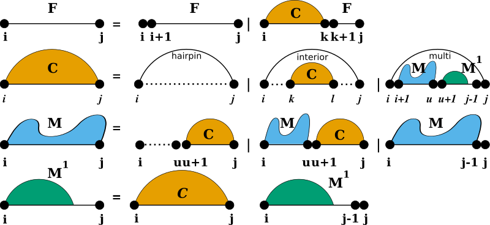
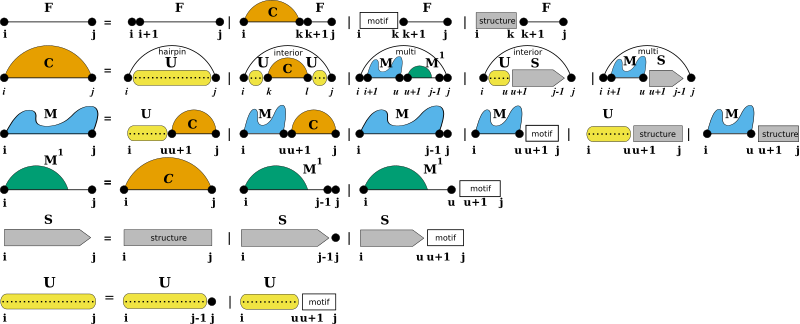
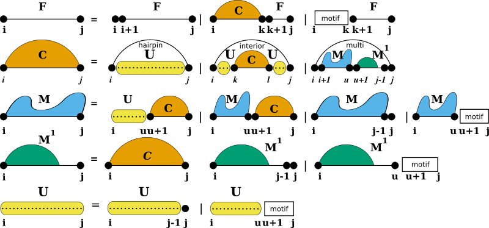

Secondary Structure Folding Grammar¶
A description of the basic grammar to generate secondary structures, used for almost all prediction algorithms in our library and how to modify it.
A description of the basic grammar to generate secondary structures, used for almost all prediction algorithms in our library and how to modify it.
Secondary Structure Folding Recurrences¶
To predict secondary structures composed of the four distinguished loop types introduced before, all algorithms implemented in RNAlib follow a specific decomposition scheme, also known as the RNA folding grammar , or Secondary Structure Folding Recurrences .

However, compared to other RNA secondary structure prediction libraries, our implementation allows for a fine-grained control of the above recursions by constraining both, the individual derivations of the grammar as well as the evaluation of particular loop contributions. Furthermore, we provide a mechanism to extend the above grammar with additional derivation rules, so-called Domains .
Additional Structural Domains¶
Some applications of RNA secondary structure prediction require an extension of the regular RNA folding grammar . For instance one would like to include proteins and other ligands binding to unpaired loop regions while competing with conventional base pairing. Another application could be that one may want to include the formation of self-enclosed structural modules, such as G-quadruplexes . For such applications, we provide a pair of additional domains that extend the regular RNA folding grammar, Structured domains and Unstructured domains .

While unstructured domains are usually determined by a more or less precise sequence motif, e.g. the binding site for a protein, structured domains are considered self-enclosed modules with a more or less complex pairing pattern. Our extension with these two domains introduces two production rules to fill additional dynamic processing matrices S and U where we store the pre-computed contributions of structured domains ( S ), and unstructured domains ( U ).
Structured Domains¶
Usually, structured domains represent self-enclosed structural modules that exhibit a more or less complex base pairing pattern. This can be more or less well-defined 3D motifs, such as G-Quadruplexes , or loops with additional non-canonical base pair interactions, such as kink-turns .
Unstructured Domains¶
Unstructured domains appear in the production rules of the RNA folding grammar wherever new unpaired nucleotides are attached to a growing substructure (see also [12] ):

The white boxes represent the stretch of RNA bound to the ligand and represented by a more or less specific sequence motif. The motif itself is considered unable to form base pairs. The additional production rule U is used to precompute the contribution of unpaired stretches possibly bound by one or more ligands. The auxiliary DP matrix for this production rule is filled right before processing the other (regular) production rules of the RNA folding grammar.
Domain Extension API¶
For the sake of flexibility, each of the domains is associated with a specific data structure serving as an abstract interface to the extension. The interface uses callback functions to
- pre-compute arbitrary data, e.g. filling up additional dynamic programming matrices, and
- evaluate the contribution of a paired or unpaired structural feature of the RNA.
Implementations of these callbacks are separate for regular free energy evaluation, e.g. MFE prediction, and partition function applications. A data structure holding arbitrary data required for the callback functions can be associated to the domain as well. While RNAlib comes with a default implementation for structured and unstructured domains, the system is entirely user-customizable.
Constraints on the Folding Grammar¶
Secondary Structure constraints can be subdivided into two groups:
- Hard Constraints
- Soft Constraints
While Hard-Constraints directly influence the production rules used in the folding recursions by allowing, disallowing, or enforcing certain decomposition steps, Soft-constraints on the other hand are used to change position specific contributions in the recursions by adding bonuses/penalties in form of pseudo free energies to certain loop configurations.
Hard Constraints API¶
Hard constraints as implemented in our library can be specified for individual loop types, i.e. the atomic derivations of the RNA folding grammar rules. Hence, the pairing behavior of both, single nucleotides and pairs of bases, can be constrained in every loop context separately. Additionally, an abstract implementation using a callback mechanism allows for full control of more complex hard constraints.
Soft Constraints API¶
For the sake of memory efficiency, we do not implement a loop context aware version of soft constraints. The static soft constraints as implemented only distinguish unpaired from paired nucleotides. This is usually sufficient for most use-case scenarios. However, similar to hard constraints, an abstract soft constraints implementation using a callback mechanism exists, that allows for any soft constraint that is compatible with the RNA folding grammar. Thus, loop contexts and even individual derivation rules can be addressed separately for maximum flexibility in soft-constraints application.
Note
Currently, our implementation only provides the specialized case of G-Quadruplexes .
Secondary structure constraints are always applied at decomposition level, i.e. in each step of the recursive structure decomposition, for instance during MFE prediction.
See also:
Unstructured domains , Structured domains , G-quadruplexes , Ligands binding to unstructured domains
Soft constraints , Incorporating ligands binding to specific sequence/structure motifs using soft constraints , SHAPE reactivity data